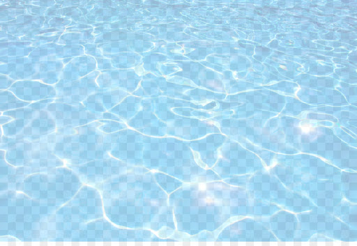

Intro
Awaiting the start of my second year…

data("karate")
karate## IGRAPH 4b458a1 UNW- 34 78 -- Zachary's karate club network
## + attr: name (g/c), Citation (g/c), Author (g/c), Faction (v/n), name
## | (v/c), label (v/c), color (v/n), weight (e/n)
## + edges from 4b458a1 (vertex names):
## [1] Mr Hi --Actor 2 Mr Hi --Actor 3 Mr Hi --Actor 4 Mr Hi --Actor 5
## [5] Mr Hi --Actor 6 Mr Hi --Actor 7 Mr Hi --Actor 8 Mr Hi --Actor 9
## [9] Mr Hi --Actor 11 Mr Hi --Actor 12 Mr Hi --Actor 13 Mr Hi --Actor 14
## [13] Mr Hi --Actor 18 Mr Hi --Actor 20 Mr Hi --Actor 22 Mr Hi --Actor 32
## [17] Actor 2--Actor 3 Actor 2--Actor 4 Actor 2--Actor 8 Actor 2--Actor 14
## [21] Actor 2--Actor 18 Actor 2--Actor 20 Actor 2--Actor 22 Actor 2--Actor 31
## [25] Actor 3--Actor 4 Actor 3--Actor 8 Actor 3--Actor 9 Actor 3--Actor 10
## + ... omitted several edgeskarate %>% ggraph(., layout = "graphopt") +
geom_edge_link0(aes(width = weight)) +
geom_node_point(aes(color = color), size = 4)